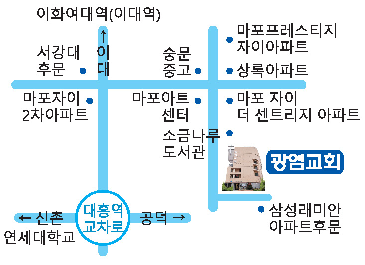

주일예배
오전 11시
매주 주일
2층 대예배실
매주 주일
2층 대예배실
매주 수요일
4층 소예배실
매주 화·수·목·금
4층 소예배실
매주 토요일
4층 소예배실
주일예배는 오전 11시, 수요예배는 저녁 7시에 드립니다.
말씀과 예배를 온라인으로 만나세요.
남신도회주일 · 한가위감사주일
제54권 38호 주보에서 전합니다.
김성희 목사
주일 말씀 제목은 주보의 당일 예배 순서를 기준으로 표시했습니다.
주일예배 후 5층 친교실에서 함께 식사를 나눕니다.
먹을 만큼만 담기, 음식물쓰레기 줄이기, 제철 농산물 먹기를 함께 실천합니다.
